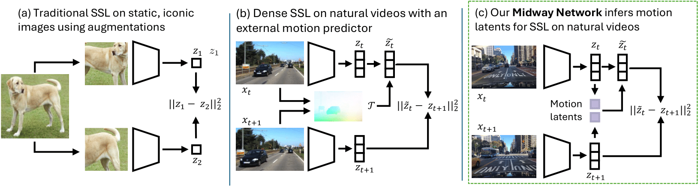

@misc{hoang2025midway,
title={Midway Network: Learning Representations for Recognition and Motion from Latent Dynamics},
author={Christopher Hoang and Mengye Ren},
year={2025},
eprint={TBD},
archivePrefix={arXiv},
primaryClass={cs.CV}
}